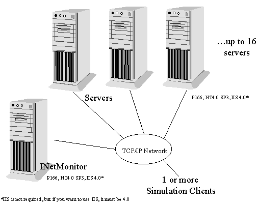
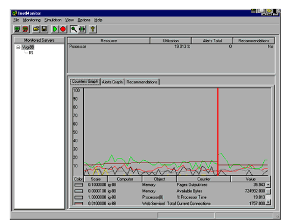
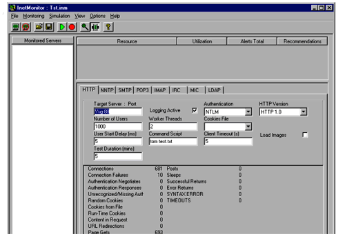

|
| ||
|
| ||
Tom Moran
Microsoft Corporation
April 27, 1998
The following article was originally published in the Site Builder Network Magazine "Servin' It Up" column (now MSDN Online Voices "Servin' It Up" column). The questions and answers that appeared with it can be found in Ask Tom: Server Q & A.
I put my car up for sale last month with an ad in MicroNews, my company's in-house newspaper. About the time I had decided nobody wanted my poor little Subaru, the phone rang.
"Hey, Tom -- it's Mark," a voice said. "Remember me?"
"Of course."
"I'm interested in your car."
I hadn't talked to Mark in over a year, since he left Microsoft Developer Support, so we did a little catching up. Turns out, he and a couple other folks have been working on something called INetMonitor.
You may not have heard of INetMonitor. Turns out it only
ships with the Microsoft BackOffice Resource Kit
(Second Edition), available through Microsoft Press  . It
will also be included in the forthcoming Microsoft
Commercial Internet System (MCIS) 2.0 Resource Kit.
. It
will also be included in the forthcoming Microsoft
Commercial Internet System (MCIS) 2.0 Resource Kit.
Guess they couldn't afford a marketing person.
Anyway, I took a look at INetMonitor, and it wasn't a new version of NetMon, as I thought. Rather, it is a surprisingly comprehensive tool for capacity planning, load monitoring, hardware configuration, and simulation. I can't imagine doing a live site on the Internet, or on an intranet, without a tool like this. After all, we all want our sites to have a great user experience, and much of that comes from ensuring we have the right capacity -- and that we understand how our applications and our users use that capacity.
The thing I like best about INetMonitor is its integrated support for a wide variety of protocols, including HTTP 1.0 and 1.1, IMAP4, IRC, LDAP 2.0 and 3.0, MIC, NNTP, POP3, and SMTP. It also supports all of the authentication methods you're used to, including cookies, plus membership-based authentication methods used with Microsoft SiteServer. Sowide a variety of support makes it a "must-have" for anyone running Site Server, and a definite "nice-to-have" if you are running anything else -- from Exchange to Internet Information Server (IIS) version 4.0. INetMonitor also has a nice graphical user interface, which makes it easier to use than some other tools I've seen.
Let's talk about monitoring capabilities first. INetMonitor can monitor both services and hardware. A typical configuration might look like this:

Figure 1. Typical configuration with INetMonitor
While you can run the monitor on the server with little performance degradation, that typically isn't done; especially if you have the activity log turned on. The monitoring component primarily uses Performance Monitor counters, and applies a set of rules to come up with alerts, which then lead to recommendations, based on frequency and severity.
I found INetMonitor quite easy to install and configure, and it should be even for a novice. It comes with fairly sufficient documentation, although I would like to see a specific section on working with Active Server Pages (ASP) technology, as well as a few more scripting examples. Be sure to check for a Word document called InetMon.doc in your InetMon directory; I found it an easier read than trying to cruise the online Help. When you do install, it will ask if you want to run disk and memory calibration. It is important to follow the instructions in the docs, since this is not on in a default installation of Windows NT.
When you start monitoring a server, all available services are automatically added. You will also be able see several views, one of which provides a graphical representation of what's happening.

Figure 2. INetMonitor interface
In the above picture, I am monitoring my own server. I also have two simulators running, one of which is passing parameters to a .asp page, and one that is simply logging on as quickly as possible while grabbing a random .htm page. I have logging set to active, so I can look at this later -- but I should warn you that this is not something to keep on for a long time. With logging on, the simulator logs every command and its response. During one test, I left for a meeting and came back to a full hard drive. Later, I added several client machines, and pushed my CPU utilization up into the 80-to-90-percent range. The alerts and recommendations started going wild, telling me I should upgrade the CPU or move to a multi-processor machine.
One of the things I can do with the monitor is to capture workload -- that is, to establish profiles of what a typical user does. For example, I may have a system that has 50,000 users, with each user logging in an average of once a day and downloading one mail message. In a few months, I might still have 50,000 users, but their behavior may have drastically changed to the point that most are logging on multiple times daily, sending multiple messages, and downloading several as well. I still have the same number of users, but behavior has sufficiently changed that I may need to upgrade my servers. This is one of the types of situation that InetMonitor can help you identify.
Another interesting use for the monitor log files is as a trace utility. You can import this into an application, such as Microsoft Access or Excel, and you have a complete list of activity at the protocol level -- instead of messing around with TCP/IP packets, if that's not your thing.
The other major piece of INetMonitor is the simulation capacity. Don't let the word "simulation" fool you, though - this tool puts real load on your servers.
I've included a screen shot from an example simulation below.

Figure 3. INetMonitor load simulation
You can see that it is fairly straight-forward. The biggest challenge is figuring out exactly what you want to do in the command script. Several keywords allow you to pass parameters, get random files, sequential files, and so forth. -- and they are all documented in the inetmon.doc file. The client is highly customizable, so that you can balance things out more realistically. With multiple clients, you can specify start delays, have one set of users receive a certain type of file, have another set use a different service, another set use ASP pages, and so on. One cautionary note: be sure you don't set so many users per client that you end up with a bottleneck on the client machine; doing so will make your test results look better than they really are.
In the course of writing this, I had the opportunity to speak with one of the folks who gets to test MSN. He used INetMonitor quite extensively to test mail and newsgroup functionality. At one time, he told me, he had more than 40 machines hitting his servers, all with custom scripts. This capability allows you to truly test a large site, since it is pretty easy to put 100-megabit cards in some cheap machines and set them up for testing. This is also where he noted a central administrative feature would be nice. One cautionary note: You can't just depend on the numbers. Be sure to do a customer-perspective test. Ask yourself: "We're handling all this load. Great! Now what does it feel like to the customer?"
A good way to start testing is to start small, then scale up gradually -- introducing more and more connections and activities -- and determine just where it is that your customer experience starts to degrade significantly. This is where the rubber meets the road, and you have to start making some decisions about capacity.
When testing, keep in mind that different protocols can have different behaviors. For example, where POP3 might be very intensive, SMTP might be very efficient. This will impact what you simulate, and how much load you can effectively ask from the client.
I was shown an early version of a handy tool for capacity planning, which will likely ship with a future version of INetMonitor. This tool allows you to specify your proposed user base, and allows you to set several screens' worth about both possible user behaviors and services you wish to provide. Press a button, and you are presented with a nice screen that displays a proposed hardware list.
I also talked to Hilal al-Hilali, the program manager for INetMonitor, about the need for central administration. He said that he was aware of the issue, and it was definitely being considered for the next release.
If you're not familiar with WCAT, it is the Web Capacity Analysis Tool, and it ships with the IIS Resource Kit. You can also download it from the MSDN Online Web Workshop.
WCAT does a nice job if you're strictly focused on testing HTTP. It has quite a few standard tests, which may save you a considerable amount of time -- since you won't necessarily have to develop your own tests. It also comes with a nice central administration feature. It is, however, more command-line focused, a little more difficult to use, and less flexible than INetMonitor.
Keep in mind that in any testing environment, you are stuck with the age-old triangle of performance versus utilization versus budget. Some questions to ask yourself: Can you afford to give each user a premium experience? Just how good is good enough? When you measure, will you measure where your current hardware breaks? Or do you measure until you get to a point where the customer experience suffers just a little too much?
Also, even though you might be running out of capacity, that doesn't necessarily mean you need a hardware upgrade. Look closely at your code and see what is happening; you can often do a variety of things even in a simple ASP page, to improve performance.
If you need capacity-planning tools, go ahead and download WCAT if you're strictly focused on HTTP or want to get a quick start before getting the resource kit. If you are using any other protocol, want the additional flexibility, or are planning a SiteServer implementation, INetMonitor is a "must have" and well worth the low price of the Back Office Resource Kit.
Tom Moran is a program manager with Microsoft Developer Support and spends a lot of time hanging out with the MSDN Online Web Workshop folks. Outside of work, he practices kenpo (although sometimes necessary at work), tries out original recipes on his family (Lisa, Aidan, and Sydney), leads white-water trips, or studies tax law (boring, but true).
Have you read my previous column, The Basics of
Security, yet? Another article I recommend:
Authentication Tutorial  on the
ActiveServer Pages.com site. Simple, yet it goes into some
good depth, and shows some code examples and configuration
hints.
on the
ActiveServer Pages.com site. Simple, yet it goes into some
good depth, and shows some code examples and configuration
hints.
-- T.M.
Did you find this material useful? Gripes? Compliments? Suggestions for other articles? Write us!
© 1999 Microsoft Corporation. All rights reserved. Terms of use.